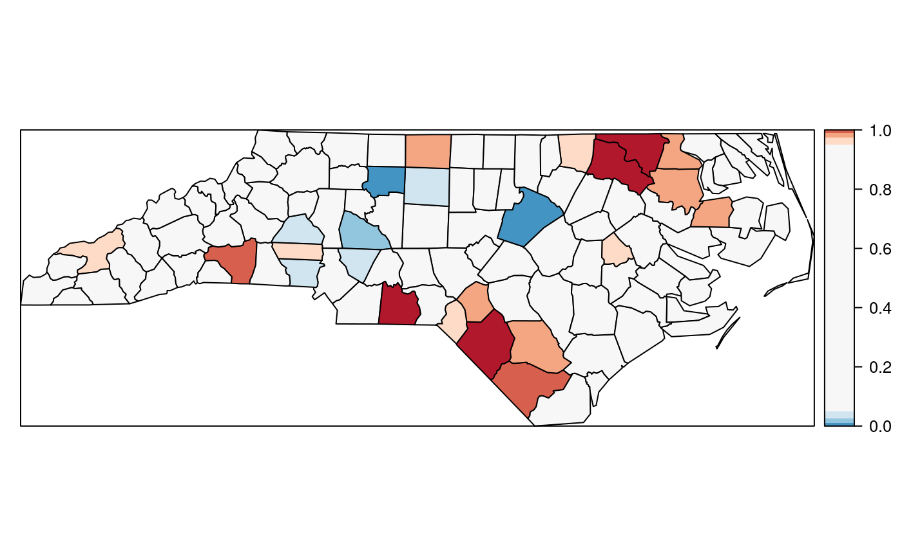

Introduction to the North Carolina SIDS data set (revised)
Roger Bivand
Source:vignettes/sids.Rmd
sids.RmdIntroduction
This data set was presented first in Symons, Grimson, and Yuan (1983), analysed with reference to the spatial nature of the data in Cressie and Read (1985), expanded in Cressie and Chan (1989), and used in detail in Cressie (1991). It is for the 100 counties of North Carolina, and includes counts of numbers of live births (also non-white live births) and numbers of sudden infant deaths, for the July 1, 1974 to June 30, 1978 and July 1, 1979 to June 30, 1984 periods. In Cressie and Read (1985), a listing of county neighbours based on shared boundaries (contiguity) is given, and in Cressie and Chan (1989), and in Cressie (1991, 386–89), a different listing based on the criterion of distance between county seats, with a cutoff at 30 miles. The county seat location coordinates are given in miles in a local (unknown) coordinate reference system. The data are also used to exemplify a range of functions in the spatial statistics module user’s manual (Kaluzny et al. 1996).
Getting the data into R
We will be using the spdep package, here version: spdep, version 1.0-1, 2019-01-21, the sp package and the maptools package. The data from the sources refered to above is documented in the help page for the nc.sids data set in spData. The actual data, included in a shapefile of the county boundaries for North Carolina has been made available in the maptools package.1 These data are known to be geographical coordinates (longitude-latitude in decimal degrees) and are assumed to use the NAD27 datum.
library(sp)
library(spdep)
if (require(rgdal, quietly=TRUE)) {
nc <- readOGR(system.file("shapes/sids.shp", package="spData")[1])
} else {
require(maptools, quietly=TRUE)
nc <- readShapeSpatial(system.file("shapes/sids.shp", package="spData")[1])
}## OGR data source with driver: ESRI Shapefile
## Source: "/home/rsb/lib/r_libs/spData/shapes/sids.shp", layer: "sids"
## with 100 features
## It has 22 fieldsThe shapefile format presupposes that you have three files with extensions .shp, .shx, and .dbf, where the first contains the geometry data, the second the spatial index, and the third the attribute data. They are required to have the same name apart from the extension, and are read here using readShapeSpatial() into the SpatialPolygonsDataFrame object nc; the class is defined in sp. The centroids of the largest polygon in each county are available using the coordinates method from sp as a two-column matrix, and can be used to place labels:

We can examine the names of the columns of the data frame to see what it contains — in fact some of the same columns that we will be examining below, and some others which will be useful in cleaning the data set.
## [1] "CNTY_ID" "AREA" "PERIMETER" "CNTY_" "NAME"
## [6] "FIPS" "FIPSNO" "CRESS_ID" "BIR74" "SID74"
## [11] "NWBIR74" "BIR79" "SID79" "NWBIR79" "east"
## [16] "north" "x" "y" "lon" "lat"
## [21] "L_id" "M_id"## Object of class SpatialPolygonsDataFrame
## Coordinates:
## min max
## x -84.32385 -75.45698
## y 33.88199 36.58965
## Is projected: FALSE
## proj4string :
## [+proj=longlat +datum=NAD27 +ellps=clrk66
## +nadgrids=@conus,@alaska,@ntv2_0.gsb,@ntv1_can.dat]
## Data attributes:
## CNTY_ID AREA PERIMETER CNTY_
## Min. :1825 Min. :0.0420 Min. :0.999 Min. :1825
## 1st Qu.:1902 1st Qu.:0.0910 1st Qu.:1.324 1st Qu.:1902
## Median :1982 Median :0.1205 Median :1.609 Median :1982
## Mean :1986 Mean :0.1263 Mean :1.673 Mean :1986
## 3rd Qu.:2067 3rd Qu.:0.1542 3rd Qu.:1.859 3rd Qu.:2067
## Max. :2241 Max. :0.2410 Max. :3.640 Max. :2241
##
## NAME FIPS FIPSNO CRESS_ID
## Alamance : 1 37001 : 1 Min. :37001 Min. : 1.00
## Alexander: 1 37003 : 1 1st Qu.:37050 1st Qu.: 25.75
## Alleghany: 1 37005 : 1 Median :37100 Median : 50.50
## Anson : 1 37007 : 1 Mean :37100 Mean : 50.50
## Ashe : 1 37009 : 1 3rd Qu.:37150 3rd Qu.: 75.25
## Avery : 1 37011 : 1 Max. :37199 Max. :100.00
## (Other) :94 (Other):94
## BIR74 SID74 NWBIR74 BIR79
## Min. : 248 Min. : 0.00 Min. : 1.0 Min. : 319
## 1st Qu.: 1077 1st Qu.: 2.00 1st Qu.: 190.0 1st Qu.: 1336
## Median : 2180 Median : 4.00 Median : 697.5 Median : 2636
## Mean : 3300 Mean : 6.67 Mean :1051.0 Mean : 4224
## 3rd Qu.: 3936 3rd Qu.: 8.25 3rd Qu.:1168.5 3rd Qu.: 4889
## Max. :21588 Max. :44.00 Max. :8027.0 Max. :30757
##
## SID79 NWBIR79 east north
## Min. : 0.00 Min. : 3.0 Min. : 19.0 Min. : 6.0
## 1st Qu.: 2.00 1st Qu.: 250.5 1st Qu.:178.8 1st Qu.: 97.0
## Median : 5.00 Median : 874.5 Median :285.0 Median :125.5
## Mean : 8.36 Mean : 1352.8 Mean :271.3 Mean :122.1
## 3rd Qu.:10.25 3rd Qu.: 1406.8 3rd Qu.:361.2 3rd Qu.:151.5
## Max. :57.00 Max. :11631.0 Max. :482.0 Max. :182.0
##
## x y lon lat
## Min. :-328.04 Min. :3757 Min. :-84.08 Min. :33.92
## 1st Qu.: -60.55 1st Qu.:3920 1st Qu.:-81.20 1st Qu.:35.26
## Median : 114.38 Median :3963 Median :-79.26 Median :35.68
## Mean : 91.46 Mean :3953 Mean :-79.51 Mean :35.62
## 3rd Qu.: 240.03 3rd Qu.:4000 3rd Qu.:-77.87 3rd Qu.:36.05
## Max. : 439.65 Max. :4060 Max. :-75.67 Max. :36.52
##
## L_id M_id
## Min. :1.00 Min. :1.00
## 1st Qu.:1.00 1st Qu.:2.00
## Median :2.00 Median :3.00
## Mean :2.12 Mean :2.67
## 3rd Qu.:3.00 3rd Qu.:3.25
## Max. :4.00 Max. :4.00
## We will now examine the data set reproduced from Cressie and collaborators, included in spdep, and add the neighbour relationships used in Cressie and Chan (1989) to the background map as a graph shown in Figure :
gal_file <- system.file("weights/ncCR85.gal", package="spData")[1]
ncCR85 <- read.gal(gal_file, region.id=nc$FIPSNO)
ncCR85## Neighbour list object:
## Number of regions: 100
## Number of nonzero links: 492
## Percentage nonzero weights: 4.92
## Average number of links: 4.92gal_file <- system.file("weights/ncCC89.gal", package="spData")[1]
ncCC89 <- read.gal(gal_file, region.id=nc$FIPSNO)
ncCC89## Neighbour list object:
## Number of regions: 100
## Number of nonzero links: 394
## Percentage nonzero weights: 3.94
## Average number of links: 3.94
## 2 regions with no links:
## 37055 37095Printing the neighbour object shows that it is a neighbour list object, with a very sparse structure — if displayed as a matrix, only 3.94% of cells would be filled. Objects of class nb contain a list as long as the number of counties; each component of the list is a vector with the index numbers of the neighbours of the county in question, so that the neighbours of the county with region.id of 37001 can be retreived by matching against the indices. More information can be obtained by using summary() on an nb object. Finally, we associate a vector of names with the neighbour list, through the row.names argument. The names should be unique, as with data frame row names.
## Neighbour list object:
## Number of regions: 100
## Number of nonzero links: 394
## Percentage nonzero weights: 3.94
## Average number of links: 3.94
## 2 regions with no links:
## 37055 37095## [1] 11 26 29 30 48## [1] 37033 37081 37135 37063 37037The neighbour list object records neighbours by their order in relation to the list itself, so the neighbours list for the county with region.id “37001” are the seventeenth, nineteenth, thirty-second, forty-first and sixty-eighth in the list. We can retreive their codes by looking them up in the region.id attribute.
## [1] "Dare" "Hyde"We should also note that this neighbour criterion generates two counties with no neighbours, Dare and Hyde, whose county seats were more than 30 miles from their nearest neighbours. The card() function returns the cardinality of the neighbour set. We need to return to methods for handling no-neighbour objects later on. We will also show how new neighbours lists may be constructed in , and compare these with those from the literature.
Probability mapping
Rather than review functions for measuring and modelling spatial dependence in the spdep package, we will focus on probability mapping for disease rates data. Typically, we have counts of the incidence of some disease by spatial unit, associated with counts of populations at risk. The task is then to try to establish whether any spatial units seem to be characterised by higher or lower counts of cases than might have been expected in general terms (Bailey and Gatrell 1995).
An early approach by Choynowski (1959), described by Cressie and Read (1985) and Bailey and Gatrell (1995), assumes, given that the true rate for the spatial units is small, that as the population at risk increases to infinity, the spatial unit case counts are Poisson with mean value equal to the population at risk times the rate for the study area as a whole. Choynowski’s approach folds the two tails of the measured probabilities together, so that small values, for a chosen \(\alpha\), occur for spatial units with either unusually high or low rates. For this reason, the high and low counties are plotted separately in Figure .
ch <- choynowski(nc$SID74, nc$BIR74)
nc$ch_pmap_low <- ifelse(ch$type, ch$pmap, NA)
nc$ch_pmap_high <- ifelse(!ch$type, ch$pmap, NA)
prbs <- c(0,.001,.01,.05,.1,1)
nc$high = cut(nc$ch_pmap_high, prbs)
nc$low = cut(nc$ch_pmap_low,prbs )
For more complicated thematic maps, it may be helpful to use ColorBrewer (http://colorbrewer.org) colour palettes. Here we will only use the grey sequential palette, available in R in the RColorBrewer package (the colours are copied here to avoid loading the package).
While the choynowski() function only provides the probability map values required, the probmap() function returns raw (crude) rates, expected counts (assuming a constant rate across the study area), relative risks, and Poisson probability map values calculated using the standard cumulative distribution function ppois(). This does not fold the tails together, so that counties with lower observed counts than expected, based on population size, have values in the lower tail, and those with higher observed counts than expected have values in the upper tail, as Figure shows.
pmap <- probmap(nc$SID74, nc$BIR74)
nc$pmap <- pmap$pmap
brks <- c(0,0.001,0.01,0.025,0.05,0.95,0.975,0.99,0.999,1)
library(RColorBrewer)
Marilia Carvalho (personal communication) and Virgilio Gómez Rubio (Gómez-Rubio, Ferrándiz-Ferragud, and López-Quílez 2005) have pointed to the unusual shape of the distribution of the Poisson probability values (Figure ), repeating the doubts about probability mapping voiced by Cressie (1991, 392): “an extreme value \(\ldots\) may be more due to its lack of fit to the Poisson model than to its deviation from the constant rate assumption”. There are many more high values than one would have expected, suggesting perhaps overdispersion, that is that the ratio of the variance and mean is larger than unity.
One ad-hoc way to assess the impact of the possible failure of our assumption that the counts follow the Poisson distribution is to estimate the dispersion by fitting a generalized linear model of the observed counts including only the intercept (null model) and offset by the observed population at risk (suggested by Marilia Carvalho and associates):
res <- glm(SID74 ~ offset(log(BIR74)), data=nc, family="quasipoisson")
nc$stdres <- rstandard(res)
brks <- c(-4, -3, -2, -1.5, -1, -0.5, 0.5, 1, 1.5, 2, 3, 4)
The dispersion is equal to 2.2786, much greater than unity; we calculate the corrected probability map values by taking the standardised residuals of the model, taking the size of the dispersion into account; the results are shown in Figure . Many fewer counties appear now to have unexpectedly large or small numbers of cases. This is an ad-hoc adjustment made because R provides access to a wide range of model-fitting functions that can be used to help check our assumptions. Gómez-Rubio, Ferrándiz-Ferragud, and López-Quílez (2005) chose rather to construct a probability map under the hypothesis that data are drawn from a Negative Binomial distribution.
So far, none of the maps presented have made use of the spatial dependence possibly present in the data. A further elementary step that can be taken is to map Empirical Bayes estimates of the rates, which are smoothed in relation to the raw rates. The underlying question here is linked to the larger variance associated with rate estimates for counties with small populations at risk compared with counties with large populations at risk. Empirical Bayes estimates place more credence on the raw rates of counties with large populations at risk, and modify them much less than they modify rates for small counties. In the case of small populations at risk, more confidence is placed in either the global rate for the study area as a whole, or for local Empirical Bayes estimates, in rates for a larger moving window including the neighbours of the county being estimated. The function used for this in spdep is EBlocal(), initially contributed by Marilia Carvalho. It parallels a similar function in GeoDa, but uses the Bailey and Gatrell (1995) interpretation of Marshall (1991), rather than that in GeoDa (Anselin, Syabri, and Smirnov 2002).
global_rate <- sum(nc$SID74)/sum(nc$BIR74)
nc$Expected <- global_rate * nc$BIR74
res <- EBlocal(nc$SID74, nc$Expected, ncCC89, zero.policy=TRUE)
nc$EB_loc <- res$est
brks <- c(0, 0.25, 0.5, 0.75, 1, 2, 3, 4, 5)
spl <- list("sp.text", loc=coordinates(nc)[card(ncCC89) == 0,], txt=rep("*", 2), cex=1.2) The results are shown in Figure . Like other relevant functions in spdep,
The results are shown in Figure . Like other relevant functions in spdep,EBlocal() takes a zero.policy argument to allow missing values to be passed through. In this case, no local estimate is available for the two counties with no neighbours, marked by stars.
In addition to Empirical Bayes smoothing globally, used both for disease mapping and the Assuncão and Reis correction to Moran’s \(I\) for rates data (to shrink towards the global rate when the population at risk is small, here as a Monte Carlo test), lists of local neighbours can be used to shrink towards a local rate.
set.seed(1)
EBImoran.mc(nc$SID74, nc$BIR74, nb2listw(ncCC89, style="B", zero.policy=TRUE), nsim=999, zero.policy=TRUE)##
## Monte-Carlo simulation of Empirical Bayes Index (mean subtracted)
##
## data: cases: nc$SID74, risk population: nc$BIR74
## weights: nb2listw(ncCC89, style = "B", zero.policy = TRUE)
## number of simulations + 1: 1000
##
## statistic = 0.25789, observed rank = 1000, p-value = 0.001
## alternative hypothesis: greaterExploration and modelling of the data
One of the first steps taken by Cressie and Read (1985) is to try to bring out spatial trends by dividing North Carolina up into \(4\times4\) rough rectangles. Just to see how this works, let us map these rough rectangles before proceeding further (see Figure ).
Cressie constructs a transformed SIDS rates variable, 1974–78, for his analyses (with co-workers). We can replicate his stem-and-leaf figure on p. 396 in the book, taken from Cressie and Read (1989):
nc$ft.SID74 <- sqrt(1000)*(sqrt(nc$SID74/nc$BIR74) + sqrt((nc$SID74+1)/nc$BIR74))
stem(round(nc$ft.SID74, 1), scale=2)##
## The decimal point is at the |
##
## 0 | 9
## 1 | 111244
## 1 | 567789999
## 2 | 0011111222334444
## 2 | 55555666677778999999999
## 3 | 000111122333333344444444
## 3 | 5568999
## 4 | 013344
## 4 | 555557
## 5 | 2
## 5 |
## 6 | 3
Median polish smoothing
Cressie (1991, 46–48, 393–400) discusses in some detail how smoothing may be used to partition the variation in the data into smooth and rough. In order to try it out on the North Carolina SIDS data set, we will use a coarse gridding into four columns and four rows given by Cressie (1991, 553–54), where four grid cells are empty; these are given by variables L_id and M_id in object nc. Next we aggregate the number of live births and the number of SIDS cases 1974–1978 for the grid cells:
Using the same Freeman-Tukey transformation as is used for the county data, we coerce the data into a correctly configured matrix, some of the cells of which are empty. The medpolish function is applied to the matrix, being told to remove empty cells; the function iterates over the rows and columns of the matrix using median to extract an overall effect, row and column effects, and residuals:
mFT <- sqrt(1000)*(sqrt(mSID74/mBIR74) + sqrt((mSID74+1)/mBIR74))
mFT1 <- t(matrix(mFT, 4, 4, byrow=TRUE))
med <- medpolish(mFT1, na.rm=TRUE, trace.iter=FALSE)
med##
## Median Polish Results (Dataset: "mFT1")
##
## Overall: 2.765802
##
## Row Effects:
## [1] -0.728192882 0.001560182 0.861279153 -0.001560182
##
## Column Effects:
## [1] 0.00000000 -0.03564965 0.44969186 0.00000000
##
## Residuals:
## [,1] [,2] [,3] [,4]
## [1,] -0.089076 0.089076 0.33761 -0.089076
## [2,] 0.089076 -0.089076 -0.33761 0.089076
## [3,] 0.327702 -0.327702 -0.93746 0.327702
## [4,] -0.324994 0.324994 0.49479 -0.324994Returning to the factors linking rows and columns to counties, and generating matrices of dummy variables using model.matrix, we can calculate fitted values of the Freeman-Tukey adjusted rate for each county, and residuals by subtracting the fitted value from the observed rate. Naturally, the fitted value will be the same for counties in the same grid cell:
mL_id <- model.matrix(~ as.factor(nc$L_id) -1)
mM_id <- model.matrix(~ as.factor(nc$M_id) -1)
nc$pred <- c(med$overall + mL_id %*% med$row + mM_id %*% med$col)
nc$mp_resid <- nc$ft.SID74 - nc$predcI_ft <- pretty(nc$ft.SID74, n=9)
pal_ft <- colorRampPalette(brewer.pal(6, "YlOrBr"))(length(cI_ft)-1)
p1 <- spplot(nc, c("ft.SID74"), col.regions=pal_ft, at=cI_ft, col="grey30", main="FT transformed SIDS rate")
p2 <- spplot(nc, c("pred"), col.regions=pal_ft, at=cI_ft, col="grey30", main="Median-polish fit")
atn <- pretty(nc$mp_resid[nc$mp_resid < 0])
atp <- pretty(nc$mp_resid[nc$mp_resid >= 0])
pal <- c(rev(brewer.pal(length(atn-1), "YlOrRd")), brewer.pal(length(atp[-1]), "YlGnBu")[-1])
p3 <- spplot(nc, "mp_resid", at=c(atn, atp[-1]), col.regions=pal, col="grey30", main="Median-polish residuals")
plot(p1, split=c(1,1,1,3), more=TRUE)
plot(p2, split=c(1,2,1,3), more=TRUE)
plot(p3, split=c(1,3,1,3), more=FALSE)Figure shows the median polish smoothing results as three maps, the observed Freeman-Tukey transformed SIDS rates, the fitted smoothed values, and the residuals. In addition, a plot for the median polish object is also shown, plotting the smooth residuals against the outer product of the row and column effects divided by the overall effect, which would indicate a lack of additivity between row and column if this was the case — this is more relevant for analysis of tables of covariates rather than geographical grids.
CAR model fitting
We will now try to replicate three of the four models fitted by (Cressie and Chan 1989) to the transformed rates variable. The first thing to do is to try to replicate their 30 mile distance between county seats neighbours, which almost works. From there we try to reconstruct three of the four models they fit, concluding that we can get quite close, but that a number of questions are raised along the way.
Building the weights is much more complicated, because they use a combination of distance-metric and population-at-risk based weights, but we can get quite close (see also Kaluzny et al. 1996):
sids.nhbr30.dist <- nbdists(ncCC89, cbind(nc$east, nc$north))
sids.nhbr <- listw2sn(nb2listw(ncCC89, glist=sids.nhbr30.dist, style="B", zero.policy=TRUE))
dij <- sids.nhbr[,3]
n <- nc$BIR74
el1 <- min(dij)/dij
el2 <- sqrt(n[sids.nhbr$to]/n[sids.nhbr$from])
sids.nhbr$weights <- el1*el2
sids.nhbr.listw <- sn2listw(sids.nhbr)The first model (I) is a null model with just an intercept, the second (II) includes all the 12 parcels of contiguous counties in 4 east-west and 4 north-south bands, while the fourth (IV) includes the transformed non-white birth-rate:
Cressie identifies Anson county as an outlier, and drops it from further analysis. Because the weights are constructed in a complicated way, they will be subsetted by dropping the row and column of the weights matrix:
## character(0)W <- listw2mat(sids.nhbr.listw)
W.4 <- W[-outl, -outl]
sids.nhbr.listw.4 <- mat2listw(W.4)
nc2 <- nc[!(1:length(nc$CNTY_ID) %in% outl),]It appears that both numerical issues (convergence in particular) and uncertainties about the exact spatial weights matrix used make it difficult to reproduce the results of Cressie and Chan (1989), also given in Cressie (1991). We now try to replicate them for the null weighted CAR model (Cressie has intercept 2.838, \(\hat{\theta}\) 0.833, for k=1):
ecarIaw <- spautolm(ft.SID74 ~ 1, data=nc2, listw=sids.nhbr.listw.4, weights=BIR74, family="CAR")
summary(ecarIaw)##
## Call:
## spautolm(formula = ft.SID74 ~ 1, data = nc2, listw = sids.nhbr.listw.4,
## weights = BIR74, family = "CAR")
##
## Residuals:
## Min 1Q Median 3Q Max
## -2.010292 -0.639658 -0.062209 0.443549 2.018065
##
## Coefficients:
## Estimate Std. Error z value Pr(>|z|)
## (Intercept) 2.945323 0.095135 30.959 < 2.2e-16
##
## Lambda: 0.86814 LR test value: 22.83 p-value: 1.7701e-06
## Numerical Hessian standard error of lambda: 0.04838
##
## Log likelihood: -118.8432
## ML residual variance (sigma squared): 1266.5, (sigma: 35.588)
## Number of observations: 99
## Number of parameters estimated: 3
## AIC: 243.69The spatial parcels model also seems to work, with Cressie’s \(\hat{\theta}\) 0.710, and the other coefficients agreeing more or less by rank:
ecarIIaw <- spautolm(ft.SID74 ~ both - 1, data=nc2, listw=sids.nhbr.listw.4, weights=BIR74, family="CAR")
summary(ecarIIaw)##
## Call:
## spautolm(formula = ft.SID74 ~ both - 1, data = nc2, listw = sids.nhbr.listw.4,
## weights = BIR74, family = "CAR")
##
## Residuals:
## Min 1Q Median 3Q Max
## -2.55896 -0.46338 -0.02035 0.38935 2.05682
##
## Coefficients:
## Estimate Std. Error z value Pr(>|z|)
## both1:2 2.06223 0.20016 10.3031 < 2.2e-16
## both1:3 2.91823 0.14139 20.6400 < 2.2e-16
## both1:4 4.11486 0.29939 13.7439 < 2.2e-16
## both2:1 2.57650 0.26905 9.5762 < 2.2e-16
## both2:2 2.17403 0.18222 11.9305 < 2.2e-16
## both2:3 2.67397 0.15329 17.4443 < 2.2e-16
## both2:4 3.11361 0.24699 12.6062 < 2.2e-16
## both3:1 2.94400 0.29893 9.8486 < 2.2e-16
## both3:2 2.65391 0.14098 18.8250 < 2.2e-16
## both3:3 2.91619 0.17099 17.0552 < 2.2e-16
## both3:4 3.20425 0.20349 15.7468 < 2.2e-16
## both4:3 3.80286 0.20806 18.2781 < 2.2e-16
##
## Lambda: 0.2109 LR test value: 1.3088 p-value: 0.25261
## Numerical Hessian standard error of lambda: NaN
##
## Log likelihood: -99.25505
## ML residual variance (sigma squared): 891.48, (sigma: 29.858)
## Number of observations: 99
## Number of parameters estimated: 14
## AIC: 226.51Finally, the non-white model repeats Cressie’s finding that much of the variance of the transformed SIDS rate for 1974–8 can be accounted for by the transformed non-white birth variable (Cressie intercept 1.644, \(\hat{b}\) 0.0346, \(\hat{\theta}\) 0.640 — not significant):
ecarIVaw <- spautolm(ft.SID74 ~ ft.NWBIR74, data=nc2, listw=sids.nhbr.listw.4, weights=BIR74, family="CAR")
summary(ecarIVaw)##
## Call:
## spautolm(formula = ft.SID74 ~ ft.NWBIR74, data = nc2, listw = sids.nhbr.listw.4,
## weights = BIR74, family = "CAR")
##
## Residuals:
## Min 1Q Median 3Q Max
## -1.99056 -0.44858 0.15468 0.60623 1.95541
##
## Coefficients:
## Estimate Std. Error z value Pr(>|z|)
## (Intercept) 1.4371519 0.2252729 6.3796 1.775e-10
## ft.NWBIR74 0.0408354 0.0062919 6.4902 8.572e-11
##
## Lambda: 0.22391 LR test value: 1.1577 p-value: 0.28194
## Numerical Hessian standard error of lambda: 0.5539
##
## Log likelihood: -114.0376
## ML residual variance (sigma squared): 1201.5, (sigma: 34.663)
## Number of observations: 99
## Number of parameters estimated: 4
## AIC: 236.08ecarIawll <- spautolm(ft.SID74 ~ 1, data=nc2, listw=sids.nhbr.listw.4, weights=BIR74, family="CAR", llprof=seq(-0.1, 0.9020532358, length.out=100))
plot(ll ~ lambda, ecarIawll$llprof, type="l")
References
Anselin, Luc, Ibnu Syabri, and Oleg Smirnov. 2002. “Visualizing Multivariate Spatial Correlation with Dynamically Linked Windows.” In University of California, Santa Barbara. CD-ROM.
Bailey, T. C., and A. C. Gatrell. 1995. Interactive Spatial Data Analysis. Harlow: Longman.
Choynowski, M. 1959. “Maps Based on Probabilities.” Journal of the American Statistical Association 54: 385–88.
Cressie, N. 1991. Statistics for Spatial Data. New York: Wiley.
Cressie, N., and N. H. Chan. 1989. “Spatial Modelling of Regional Variables.” Journal of the American Statistical Association 84: 393–401.
Cressie, N., and T. R. C. Read. 1985. “Do Sudden Infant Deaths Come in Clusters?” Statistics and Decisions Supplement Issue 2: 333–49.
———. 1989. “Spatial Data-Analysis of Regional Counts.” Biometrical Journal 31: 699–719.
Gómez-Rubio, V., J. Ferrándiz-Ferragud, and A. López-Quílez. 2005. “Detecting Clusters of Disease with R.” Journal of Geographical Systems 7: 189–206.
Kaluzny, S. P., S. C. Vega, T. P. Cardoso, and A. A. Shelly. 1996. S-PLUS SPATIALSTATS User’s Manual Version 1.0. Seattle: MathSoft Inc.
Marshall, R. M. 1991. “Mapping Disease and Mortality Rates Using Empirical Bayes Estimators.” Applied Statistics 40: 283–94.
Symons, M. J., R. C. Grimson, and Y. C. Yuan. 1983. “Clustering of Rare Events.” Biometrics 39: 193–205.
These data were taken with permission from a now-offline link: [sal.agecon.uiuc.edu/datasets/sids.zip].↩